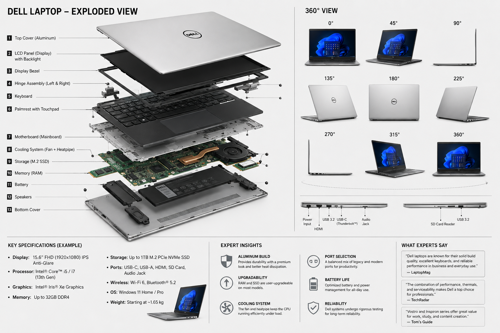
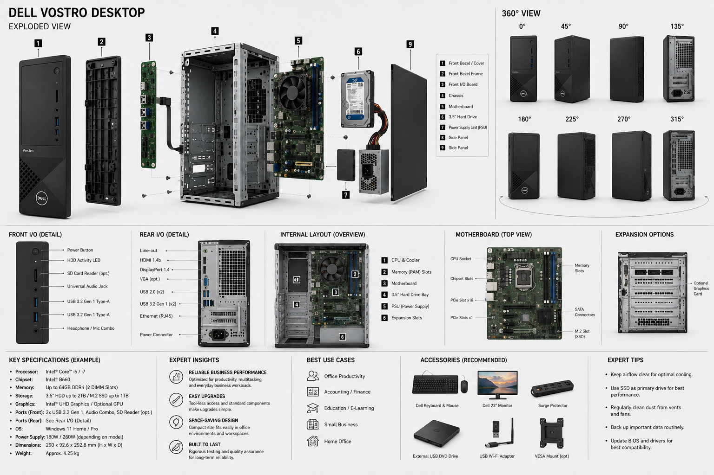

Technik & Equipment
Willkommen in meiner Ausrüstungs- und Technikübersicht! Als Medien- und Fotografie-Enthusiast setze ich auf professionelle Hardware für Video, Audio, Luftaufnahmen und Datenverarbeitung. Hier findest du eine detaillierte technische Analyse meines Equipments inkl. Explosionszeichnungen und Spezifikationen.
1. Sony 4K Camcorder
Hauptkamera für professionelle Videoaufnahmen, Interviews und Live-Produktionen mit hochauflösendem 1.0-Typ Exmor RS™ CMOS Sensor und 20x G-Objektiv.
Wichtige Spezifikationen & Features:
- Sensor & Auflösung: 1.0-Typ Exmor RS CMOS Sensor / 4K UHD (3840 × 2160)
- Optik: Sony G-Lens mit 20x optischem Zoom & integrierten ND-Filtern (1/4, 1/16, 1/64)
- Audio: 2x XLR-Eingänge mit Phantomspeisung (4-Kanal 24-Bit PCM)
- Speicher: Dual SD-Kartenslots (Simultan-, Relay- & Backup-Aufnahme)
2. Kamera-Drohne (Quadrocopter)
Für dynamische Luftaufnahmen und spektakuläre Perspektiven. Ausgestattet mit Brushless-Motoren, 2-Achsen Gimbal und FPV-Echtzeitübertragung.
Wichtige Spezifikationen & Features:
- Kamera & Gimbal: 1080P HD Weitwinkel-Kamera mit 2-Achsen stabilisiertem Gimbal
- Flugzeit & Reichweite: Bis zu 22 Minuten Flugzeit / 300 Meter Steuerungsreichweite
- Akku: 7.4V 2800mAh Li-Po (modulares Schnellwechselsystem)
- Features: FPV Wi-Fi Echtzeit-Stream, Return-to-Home, Headless Mode
3. Feelworld 4K Feldmonitor-Setup
Externer High-Bright Monitor zur präzisen Schärfekontrolle, Belichtungsmessung und Bildbeurteilung direkt am Set.
Wichtige Spezifikationen & Features:
- Display: 4K IPS High-Bright Panel für optimale Lesbarkeit bei Sonnenlicht
- Anschlüsse: Micro HDMI Input, Micro-USB / Stromversorgung
- Zubehör: Sonnenblende (Lens Hood), Tilt-Arm / Cold Shoe Mount & Tischstativ
4. Sony Over-Ear Noise-Cancelling Kopfhörer
Unverzichtbar für exaktes Audio-Monitoring beim Dreh sowie für den Schnitt im Studio ohne Störgeräusche.
Wichtige Spezifikationen & Features:
- Treiber: 40mm Dynamic Driver Unit für präzise Klangwiedergabe
- Noise Cancelling: Dual Noise Sensor Technologie für aktive Geräuschunterdrückung
- Akkulaufzeit: Bis zu 30 Stunden (mit NC) / Schnellladung über USB Type-C
- Codecs & Komfort: SBC, AAC, LDAC; Memory-Foam-Ohrpolster für langen Tragekomfort
5. Dell Workstations (Laptop & Vostro Desktop)
Leistungsstarke Rechenhardware für Videobearbeitung, 3D-Rendering, Bildbearbeitung mit Adobe Creative Cloud und medientechnische Berechnungen.


Wichtige Spezifikationen:
- Laptop: Intel® Core™ i5/i7 (13. Gen), 15.6" FHD IPS Anti-Glare Display, bis zu 32GB RAM, PCIe NVMe SSD
- Desktop: Dell Vostro PC, Intel B660 Chipset, erweiterbare PCIe-Steckplätze, Multi-Monitor I/O Setup
6. Samsung Galaxy S26 Mobile Workstation
Mobiles Kontrollzentrum für schnelle Content-Erstellung, Remote-Kamerasteuerung, FPV-Streaming und Kommunikation unterwegs.
Wichtige Spezifikationen & Features:
- Display: 6.2" FHD+ Dynamic AMOLED 2X (120Hz Adaptiv)
- Kamerasystem: Triple-Kamera (50MP Hauptkamera mit OIS, 12MP Ultra-Wide, 10MP Telefoto mit 3x opt. Zoom)
- Performance & Kühlung: Vapor Chamber Kühlung für lang anhaltende Performance bei Video-Exporte
7. Rainsmore 3-in-1 Transport- & Equipmenttasche
Robuste 45L Reisetasche & Rucksack zum sicheren und geschützten Transport des gesamten Equipments zu Filmlocations.
Wichtige Spezifikationen & Features:
- Kapazität & Material: 45L Fassungsvermögen, wasserabweisendes Polyester
- Fächer: Gepolstertes Laptopfach (bis 17 Zoll), Schuh-/Nassfach, Kompressionssträger
- Funktion: 3-in-1 als Rucksack, Reisetasche oder Schultertasche tragbar